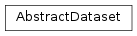
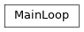

cxflow¶
cxflow base module
Classes¶
AbstractDataset: This concept prescribes the API that is required from every cxflow dataset.BaseDataset: Base class for datasets written in python.MainLoop: Train the model, manage hooks etc.AbstractModel: Abstract machine learning model which exposes input and output names, run and save methods.
-
class
cxflow.AbstractDataset(config_str)[source]¶ Bases:
objectThis concept prescribes the API that is required from every cxflow dataset. Every cxflow dataset has to have a constructor which takes YAML string config. Additionally, one may implement any
<stream_name>_streammethod in order to makestream_namestream available in the cxflowMainLoop.-
__init__(config_str)[source]¶ Create new dataset configured with the given YAML string (obligatory). The configuration must contain dataset entry and may contain output_dir’ entry. :type config_str: :class:`str :param config_str: YAML string config
-
__weakref__¶ list of weak references to the object (if defined)
-
-
class
cxflow.BaseDataset(config_str)[source]¶ Bases:
objectBase class for datasets written in python.
- In the inherited class, one should:
- override the
_init_with_kwargsmethod instead of__init__ - override the
train_streammethod - add any additional
<stream_name>_streammethod in order to make<stream_name>stream available
- override the

-
__init__(config_str)[source]¶ Create new dataset. Decode the given YAML config string and pass the obtained kwargs to the
_init_with_kwargsmethod.Parameters: config_str ( str) – dataset configuration as yaml string
-
__weakref__¶ list of weak references to the object (if defined)
-
class
cxflow.MainLoop(model, dataset, hooks=(), extra_streams=(), on_unused_sources='warn', fixed_batch_size=None, skip_zeroth_epoch=False)[source]¶ Bases:
objectTrain the model, manage hooks etc.
-
__init__(model, dataset, hooks=(), extra_streams=(), on_unused_sources='warn', fixed_batch_size=None, skip_zeroth_epoch=False)[source]¶ Parameters: - model (
AbstractModel) – trained model - dataset (
AbstractDataset) – loaded dataset - hooks (
Iterable[AbstractHook]) – a sequence of hooks - extra_streams (
List[str]) – a sequence of additional stream names to be evaluated - on_unused_sources (
str) – action to take when stream provides unused sources {‘ignore’, ‘warn’, ‘error’} - fixed_batch_size (
Optional[int]) – if specified, main_loop removes all batches that do not have the specified size
- model (
-
__weakref__¶ list of weak references to the object (if defined)
-
_check_sources(batch)[source]¶ Check for unused and missing sources. :type batch:
Dict[str,object] :param batch: batch to be checkedReturn type: None
-
_run_epoch(stream, train, stream_name)[source]¶ Iterate through the stream :type stream:
Iterable[Mapping[str,Iterable[Any]]] :param stream: Iterable stream :type train:bool:param train: if set to true, the model will be trained :type stream_name:str:param stream_name: {train} or any specifiedReturn type: None
-
_run_zeroth_epoch(streams)[source]¶ Run zeroth epoch on the specified streams. :type streams:
Iterable[str] :param streams: iterable of streams to be evaluatedReturn type: None
-
evaluate_stream(stream, stream_name)[source]¶ Evaluate the model with the given stream.
Return type: None
-
-
class
cxflow.AbstractModel(dataset, log_dir, restore_from=None, **kwargs)[source]¶ Bases:
objectAbstract machine learning model which exposes input and output names, run and save methods. AbstractModel implementations are trainable with
cxflow.MainLoop.
-
__init__(dataset, log_dir, restore_from=None, **kwargs)[source]¶ Model constructor interface.
Additional parameters (currently covered by
**kwargs) are passed according to the configurationmodelsection.Parameters: - dataset (
Optional[AbstractDataset]) – Dataset object. - log_dir (
str) – Existing directory in which all output files should be stored. - restore_from (
Optional[str]) – Information passed to the model constructor (backend-specific); usually a directory in which the trained model is stored. - kwargs – Configuration section
model.
- dataset (
-
__weakref__¶ list of weak references to the object (if defined)
-
restore_fallback¶ Return the fully-qualified name of the fallback restore class (e.g. module.submodule.BaseClass).
When restoring a model, cxflow tries to use the fallback class if the construction of the model object specified in model configuration section fails.
Return type: strReturns: fully-qualified name of the fallback restore class
-
run(batch, train)[source]¶ Run feed-forward pass with the given batch and return the results as dict.
When train=True, also update parameters. :type batch:
Mapping[str,object] :param batch: batch to be processed. :type train:bool:param train:Trueif this batch should be used for model update,Falseotherwise. :rtype:Mapping[str,object] :return: results dict
-